UX RESEARCH / MOBILE APPLICATION DESIGN
Bloom
A personalized skincare application designed to help Gen Z build healthy habits, make informed choices, and feel confident in their skin.

Mobile Application
UX Research & UI Design
Research → Define → Ideate → Design
About the Project
Overview
Bloom is a conceptual mobile skincare application designed to simplify skincare for Gen Z users who struggle with overwhelming product choices, conflicting information, and inconsistent routines.
Role
As an individual designer, I worked on UX research, competitive analysis, problem definition, ideation, and user interface design.
Challenge
Users often find it difficult to identify trustworthy skincare information, understand their skin's needs, and maintain routines that fit their lifestyle.
Proposed Solution
A personalized skincare experience that brings together simple routines, skin progress tracking, educational resources, and access to professional skincare guidance.
Design Process
From understanding skincare habits to designing a more informed and personalized experience.
Research
Exploring skincare habits, challenges, and user expectations through interviews.
Analysis
Studying existing skincare platforms and identifying potential opportunities.
Define
Identifying user pain points and refining the problem statement.
Ideation
Exploring features and organizing the proposed skincare experience.
UI Design
Translating the concept into mobile application screens.
01 / DISCOVER
User Interviews
Understanding skincare habits, product choices, trust, and the challenges users face in maintaining healthy skincare routines.
INTERVIEW QUESTIONNAIRE
Section 1: Basic Routine
What time do you normally wake up?
What is the first thing you do after you wake up?
What does the rest of your day look like?
How do you rate your energy levels during the day?
Do you workout/exercise?
What time do you normally go to sleep?
How many hours of sleep do you get?
How much water do you drink per day?
Section 2: Understanding Their Skin
How would you describe your skin (oily, dry, sensitive) ?
Do you follow a skincare routine?
If yes, what is it?
Do you see a change in your skin after practicing this routine?
Did you hear of this routine from someone or its your own?
Do you have any skin issues?
If yes, please elaborate.
Have you ever undergone a skin treatment?
Section 3: Validating Our Solutions
Have you ever used a skincare platform? If yes, which one?
What is that feature you like about this platform?
What is that feature you dislike about this platform?
What features would you want to see in a skincare platform?
Would you like to know how your food and water intake as well as sleep affects your skin?
Would you like to understand how hormones and period changes are connected to your skin?
Have you heard of skin journalling before?
Top Learnings
Skincare is a lot of effort. Users need simple, personalized guidance that makes skincare routines easier to understand and maintain.
People trust dermatologists. Users value credible, evidence-based recommendations, creating an opportunity to make expert-backed advice more accessible and transparent.
People rely on reviews. Users look for relatable experiences to reduce uncertainty when purchasing skincare products, highlighting the need for trustworthy, personalized review insights.
02 / DEFINE
Problem Framing & Brainstorming
Based on the identified problem, I explored potential features and opportunities to create a more personalized, educational, and supportive skincare experience for Gen Z.
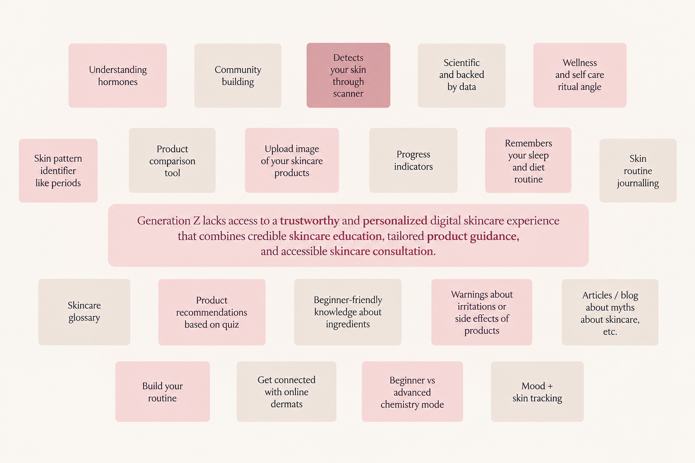
03 / ANALYZE
Market Analysis
Identifying gaps in existing skincare platforms and opportunities for Bloom.
| ASPECT | EXISTING SOLUTIONS | GAPS / LIMITATIONS | OPPORTUNITY FOR BLOOM |
|---|---|---|---|
| Personalization | Skin Bliss offers AI-powered matching; The Derma Co. and Minimalist provide concern-based product recommendations. | Guidance varies across platforms, with limited integration of education, routines, and personalized support. | Personalized skincare routines based on skin concerns, sensitivities, and individual goals. |
| Ingredient Awareness | Think Dirty emphasizes ingredient transparency; Skin Bliss and Minimalist provide ingredient-focused information. | Information can be technical, overwhelming, or disconnected from everyday skincare decisions. | Simple ingredient explanations and product compatibility guidance through an accessible scanner. |
| Expert Guidance | The Derma Co. and Minimalist emphasize science-backed skincare, while Skin Bliss uses AI-driven guidance. | Science-backed positioning does not always translate into accessible, individualized expert consultation. | Connect users with qualified skincare professionals for personalized consultation. |
| Skin Assessment | The Derma Co. and Skin Bliss offer skin analysis quizzes; Minimalist and Dot & Key provide basic assessments. | Assessments differ in depth, and may focus primarily on product recommendations. | A comprehensive skin profile connecting assessment results with routines, product guidance, and progress tracking. |
| Target Audience | Platforms serve Gen Z, millennials, ingredient-conscious consumers, and users with specific skin concerns. | Users may need multiple platforms for education, product research, and personalized skincare management. | A unified, approachable skincare experience designed around the needs of Gen Z users. |
04 / IDEATE
User Flow
Mapping the proposed user journey, from onboarding and skin assessment to personalized skincare features.
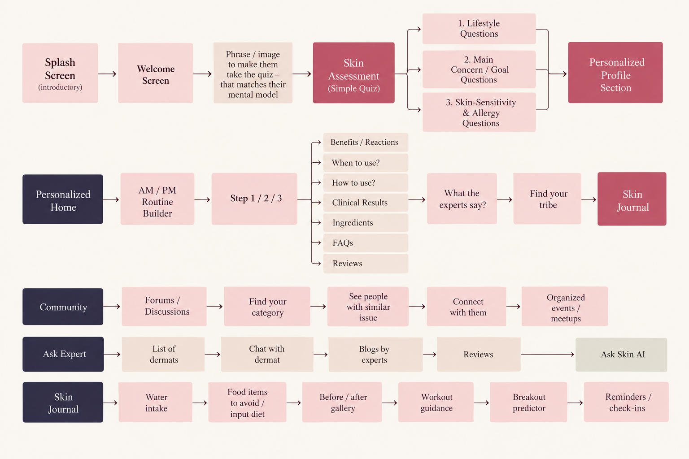
05 / STRUCTURE
Sitemap
The sitemap organizes Bloom's key features and navigation structure, creating a clear and intuitive experience for users.

06 / DESIGN
Visual Identity
Bloom's visual identity combines warm neutrals, earthy tones, and soft coral accents to create a nurturing and approachable skincare experience.
Color Palette
A warm and calming palette that communicates trust, simplicity, and personalized care.
Warm Cream
#F7F3EEDark Brown
#4E2B20Soft Coral
#F58469Soft Beige
#EAE0D4Olive Green
#514C32Typography
Clean sans-serif typography ensures readability and a consistent experience across the app.
Bloom
Nurture Your Skin
Personalized skincare guidance tailored to your skin's needs.
UI Components
Rounded components and consistent visual states create a simple, intuitive interface.
Buttons
Selection Tabs
Product Cards
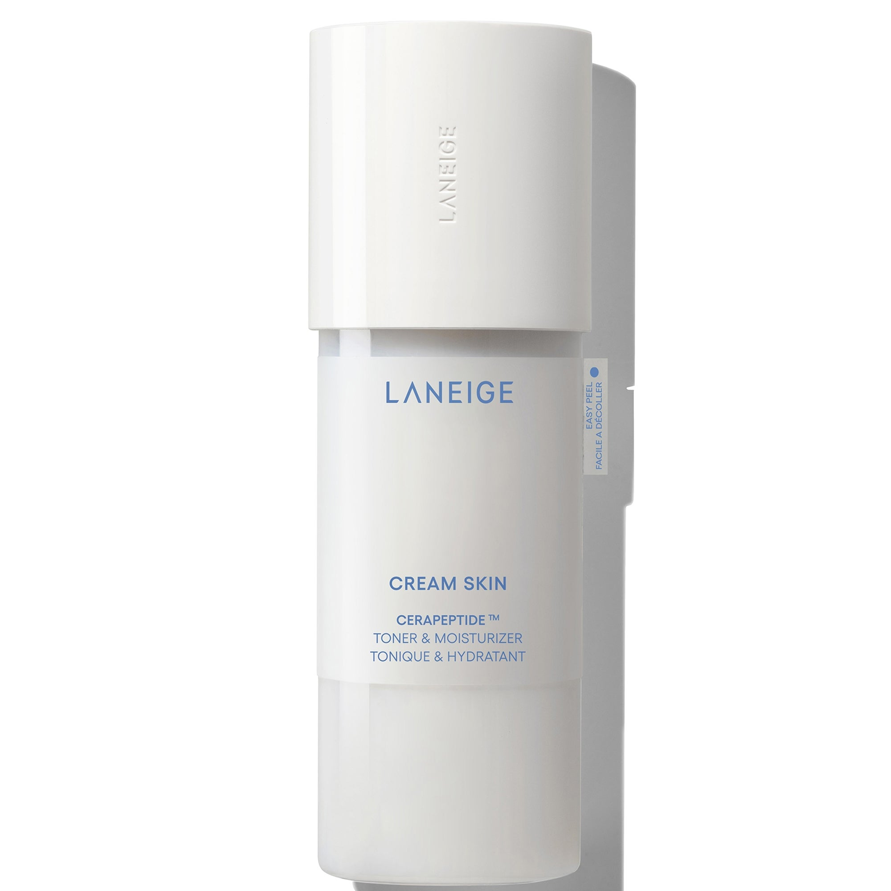
Laneige Cream
Skin Toner
Hydrating toner that helps replenish moisture and support the skin barrier.
07 / DESIGN
Final UI Screens
Bringing Bloom to life through intuitive interfaces, personalized skincare experiences, and a cohesive visual design.
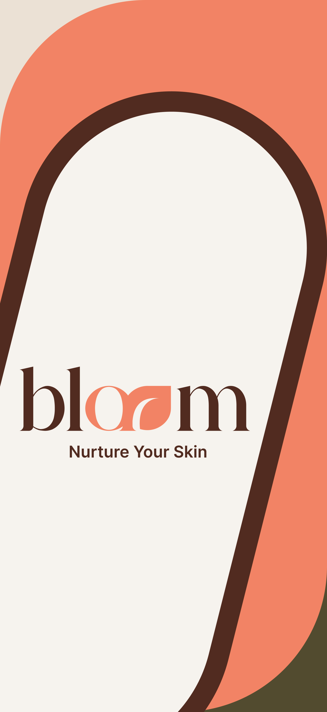
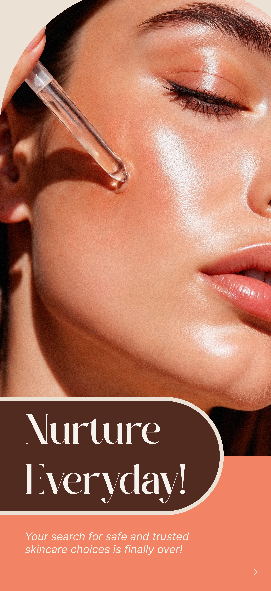
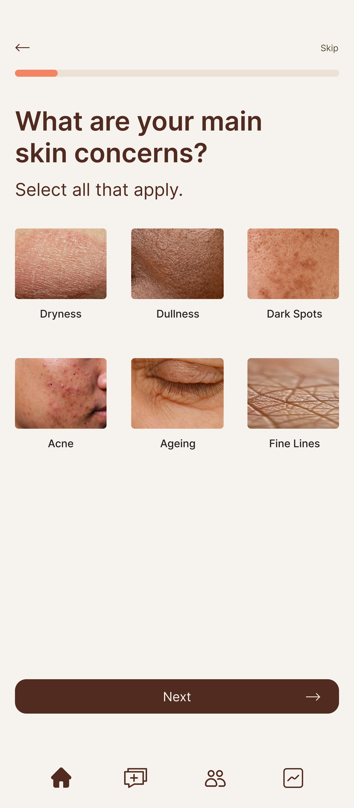
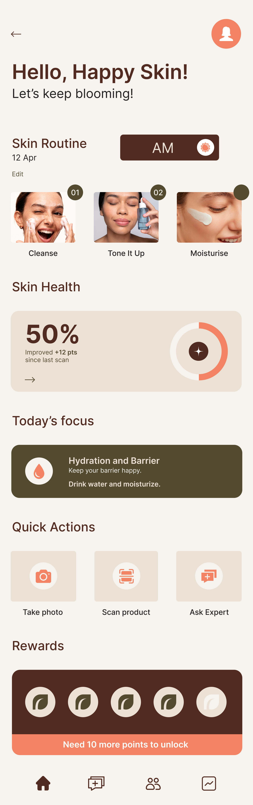
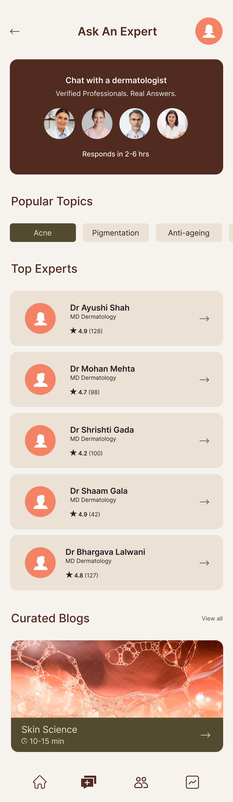
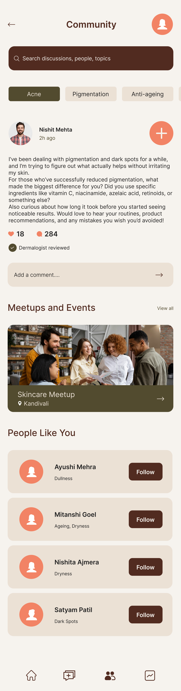
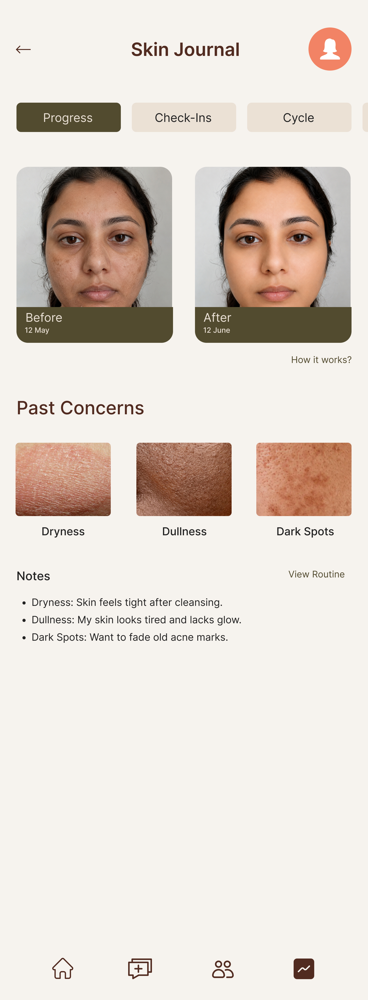
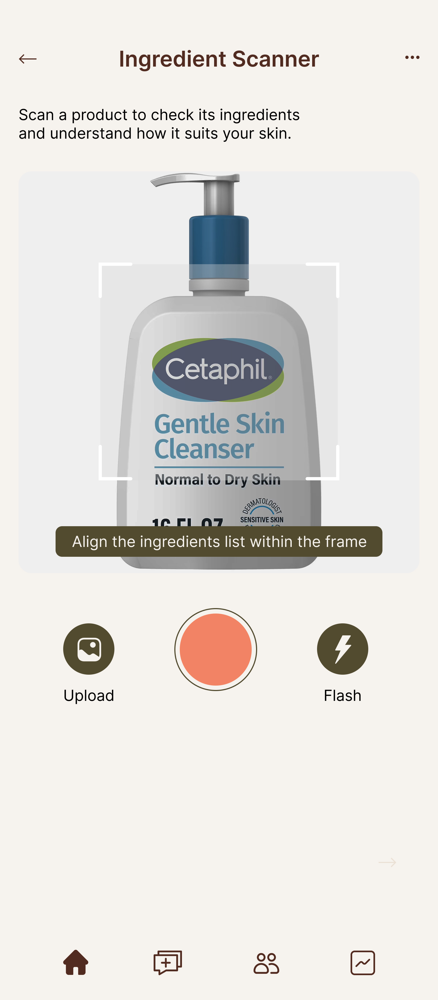
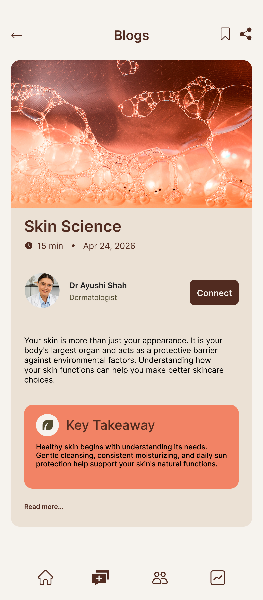
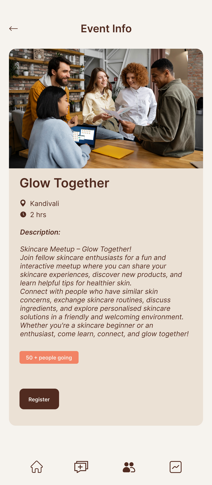
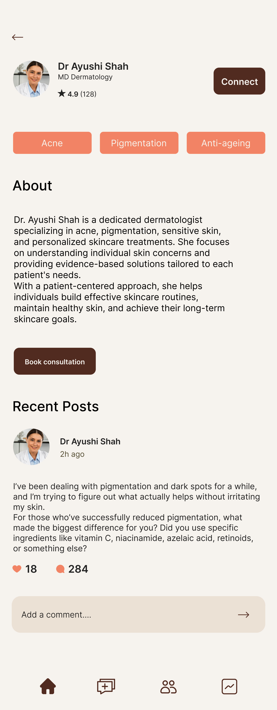
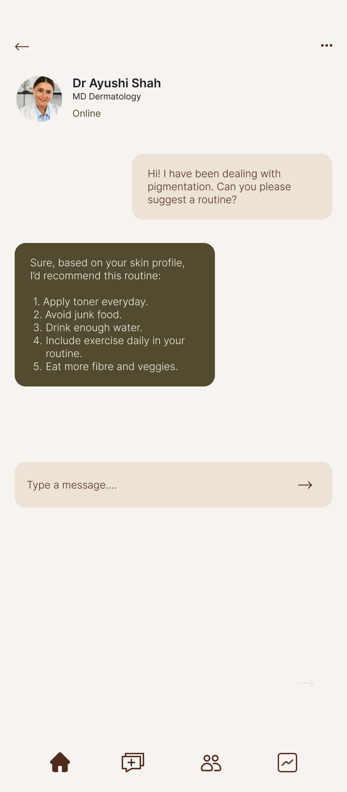
08 / REFLECT
Project Reflections
Bloom helped me understand the importance of creating a personalized and trustworthy skincare experience that goes beyond product recommendations. Through user research, competitive analysis, and interface design, I learned how to translate complex skincare information into simple and accessible experiences. One of the biggest challenges was bringing education, personalized routines, expert guidance, and progress tracking together within a cohesive interface. This project strengthened my understanding of user-centered design and the importance of balancing functionality, accessibility, and visual consistency.